同样的四站点教学数据，以研究研讨、正式答辩、理论与方法、论文精读、证据综合、田间观测六种方式展开。每组都有结果页与方法或边界页，比较的是阅读路径、图表组织与论证重点。
全部数值为可重算的教学构造，未训练模型，也未实施田间试验。此展示验证插件的原生渲染与设计表达，不代表 DSH Agent 端到端生成质量。
输入数据与计算 · 样张目录 · 实际 PPTX 全稿概览
开放白底、大证据与就近解释；标题直接给出研究对象或受证据支持的发现。
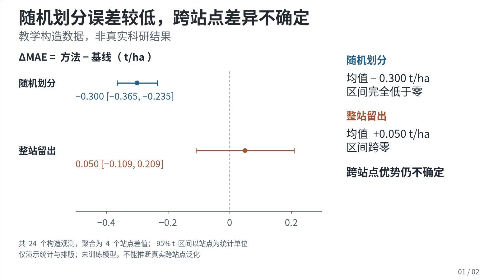
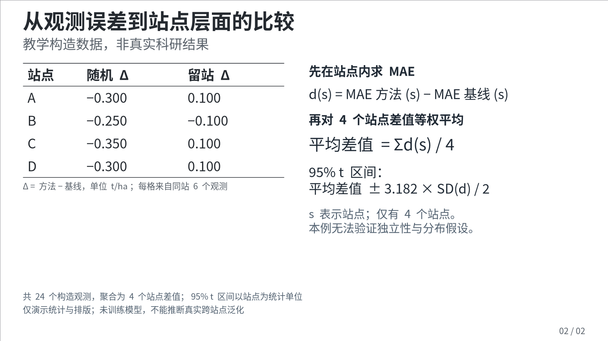
可编辑 PPTX · HTML 预览 · 可重建记录
可见章节、克制细线分组与完整条件；用稳定定位支持评委追问。
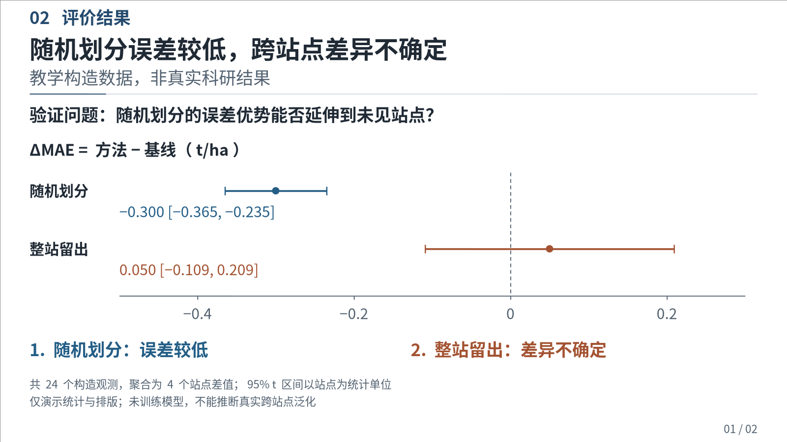
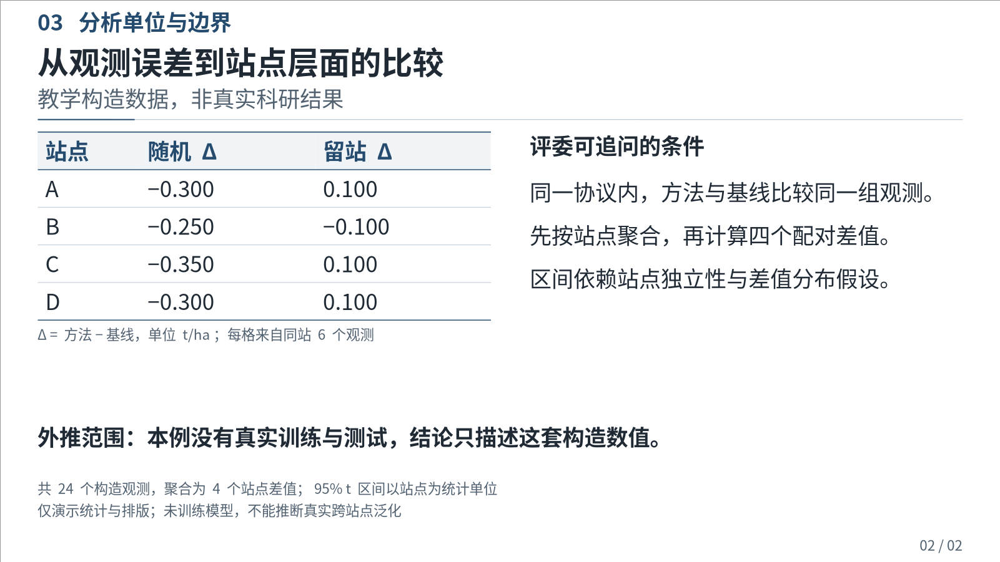
开放推导区、较大正文、衬线标题和较清楚的注释；适合定义、公式与逐步建模。
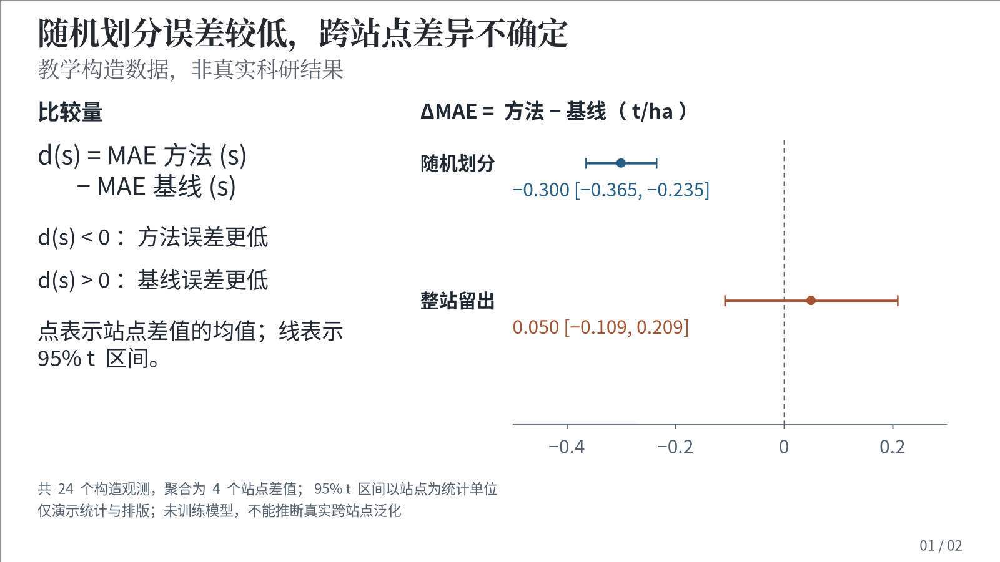
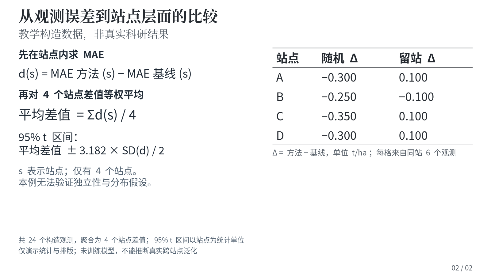
清楚区分原文证据与讲者解释；衬线正文、无填充分组与可定位图注支持细读。
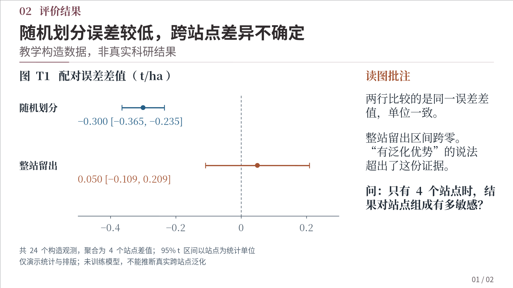
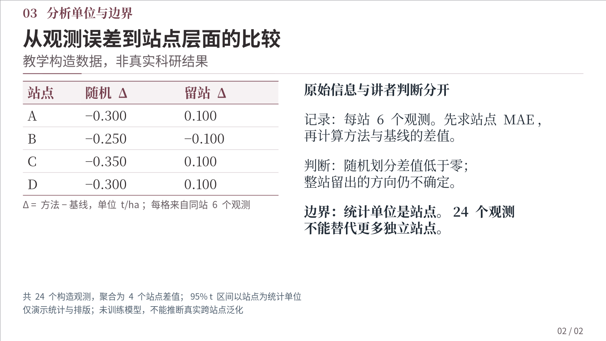
衬线标题、共同尺度、细线分组与三线表；比较对象和不可比条件同时可见。
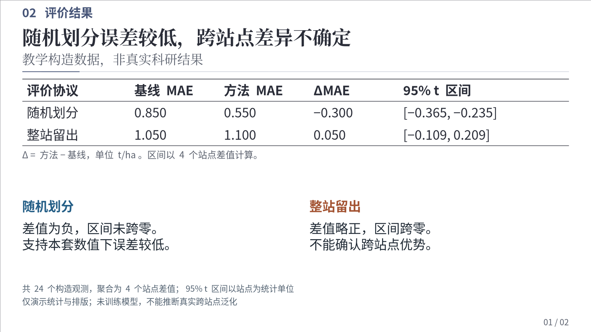
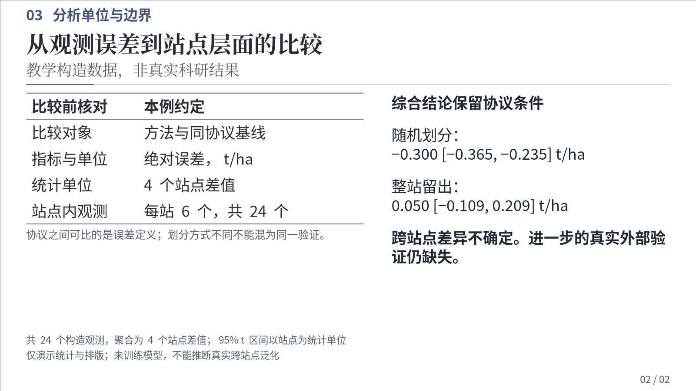
开放图面、短组名与局部浅底条件区；真实照片、地图和时间地点信息形成同一证据组。
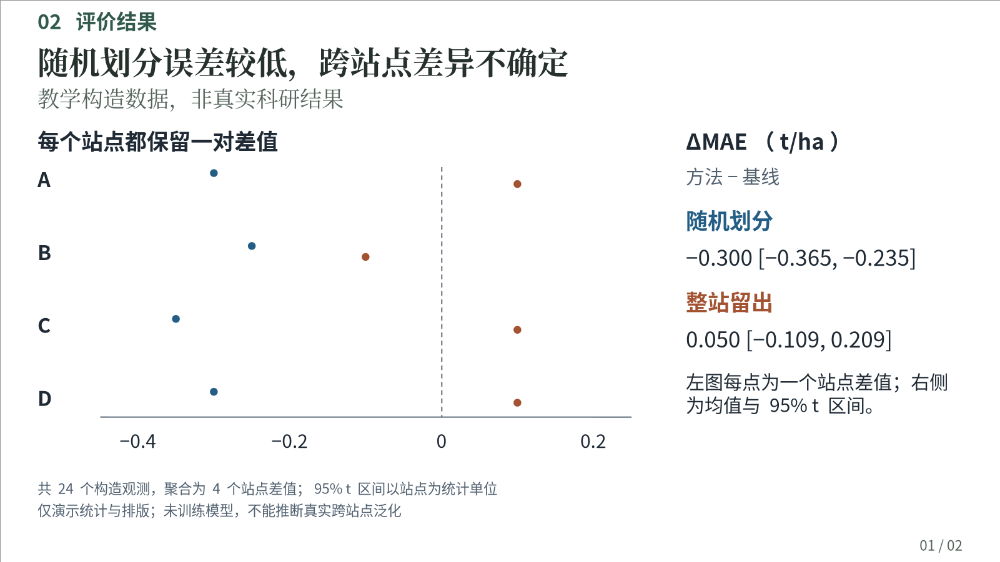
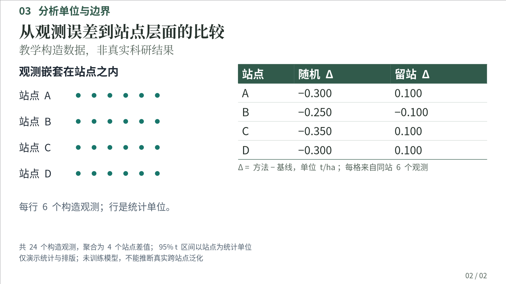